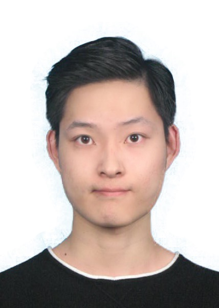

Yutao Zhong
I am a PhD student in Mathematics at the Courant Institute, New York University. I am fortunate to be advised by Prof. Mehryar Mohri and work closely with Corinna Cortes. I have also had the opportunity to collaborate with, or be mentored by, several research scientists at Google Research during my internships, including Pranjal Awasthi, Raef Bassily, Christoph Dann, Javier Gonzalvo, Satyen Kale, Teodor Marinov, Dmitry Storcheus, Ananda Theertha Suresh, Julian Zimmert, etc.
My main area of research is learning theory, and in particular in the last few years, I have worked on the following topics: consistency theory and guarantees, adversarial robustness, active learning, learning with abstentions, learning to defer, structured prediction, ranking, etc. While I am interested in theory, I am also strongly interested in designing algorithms with good theoretical guarantees.
I have also been fortunate to spend a fair amount of time as a research intern/student researcher at Google Research. This experience has given me the opportunity to work on large-scale problems for which I have derived enhanced and improved algorithmic solutions that I have fully implemented and experimented with. My goal is to use theoretical insights to develop principled and practical algorithms that can handle real-world problems.
Publications
-
Anqi Mao, Mehryar Mohri, and Yutao Zhong.
Theoretically Grounded Loss Functions and Algorithms for Score-Based Multi-Class Abstention.
In Twenty-seventh Conference on Artificial Intelligence and Statistics (AISTATS 2024). Valencia, Spain, 2024.
Christopher Mohri, Daniel Andor, Eunsol Choi, Michael Collins, Anqi Mao, and Yutao Zhong.
Learning to Reject with a Fixed Predictor: Application to Decontextualization.
In Twelfth International Conference on Learning Representations (ICLR 2024). Vienna, Austria, 2024.
Anqi Mao, Mehryar Mohri, and Yutao Zhong.
Predictor-Rejector Multi-Class Abstention: Theoretical Analysis and Algorithms.
In Proceedings of the 35th International Conference on Algorithmic Learning Theory (ALT 2024). San Diego, California, 2024.
Anqi Mao, Mehryar Mohri, and Yutao Zhong.
Principled Approaches for Learning to Defer with Multiple Experts.
In International Symposium on Artificial Intelligence and Mathematics (ISAIM 2024). Fort Lauderdale, Florida, 2024.
Anqi Mao, Mehryar Mohri, and Yutao Zhong.
Structured prediction with stronger consistency guarantees.
In Advances in Neural Information Processing Systems (NeurIPS 2023). New Orleans, Louisiana, 2023.
Anqi Mao, Christopher Mohri, Mehryar Mohri, and Yutao Zhong.
Two-stage learning to defer with multiple experts.
In Advances in Neural Information Processing Systems (NeurIPS 2023). New Orleans, Louisiana, 2023.
Anqi Mao, Mehryar Mohri, and Yutao Zhong.
H-consistency bounds: characterization and extensions.
In Advances in Neural Information Processing Systems (NeurIPS 2023). New Orleans, Louisiana, 2023.
Anqi Mao, Mehryar Mohri, and Yutao Zhong.
Cross-entropy loss functions: Theoretical analysis and applications.
In Proceedings of the 40th International Conference on Machine Learning (ICML 2023). Honolulu, Hawaii, 2023.
Anqi Mao, Mehryar Mohri, and Yutao Zhong.
H-consistency bounds for pairwise misranking loss surrogates.
In Proceedings of the 40th International Conference on Machine Learning (ICML 2023). Honolulu, Hawaii, 2023.
Anqi Mao, Mehryar Mohri, and Yutao Zhong.
Ranking with Abstention.
ICML 2023 Workshop on The Many Facets of Preference-Based Learning. Honolulu, Hawaii, 2023.
Pranjal Awasthi, Anqi Mao, Mehryar Mohri, and Yutao Zhong.
DC-programming for neural network optimizations.
Journal of Global Optimization (JOGO), to appear, 2023.
Pranjal Awasthi, Anqi Mao, Mehryar Mohri, and Yutao Zhong.
Theoretically grounded loss functions and algorithms for adversarial robustness.
In Twenty-sixth Conference on Artificial Intelligence and Statistics (AISTATS 2023). Valencia, Spain, 2023.
Pranjal Awasthi, Anqi Mao, Mehryar Mohri, and Yutao Zhong.
Multi-class H-consistency bounds.
In Advances in Neural Information Processing Systems (NeurIPS 2022). New Orleans, Louisiana, 2022.
Pranjal Awasthi, Anqi Mao, Mehryar Mohri, and Yutao Zhong.
H-consistency bounds for surrogate loss minimizers.
In Proceedings of the 39th International Conference on Machine Learning (ICML 2022). Baltimore, MD, 2022.
(Long Presentation)
Pranjal Awasthi, Anqi Mao, Mehryar Mohri, and Yutao Zhong.
A Finer Calibration Analysis for Adversarial Robustness.
CoRR, abs/2105.01550, 2021.
Pranjal Awasthi, Natalie S. Frank, Anqi Mao, Mehryar Mohri, and Yutao Zhong.
Calibration and consistency of adversarial surrogate losses.
In Advances in Neural Information Processing Systems (NeurIPS 2021). Online, 2021.
(Spotlight Presentation)
Teaching
-
Foundations of Machine Learning (Teaching Assistant and Grader, Spring 2023)
-
Foundations of Machine Learning (Teaching Assistant and Grader, Spring 2022)
Contact
-
E-mail: yutao-at-cims.nyu.edu
|